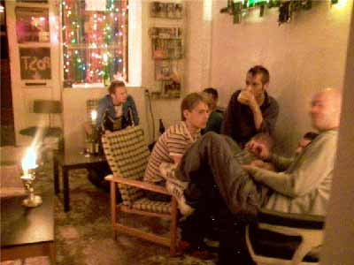
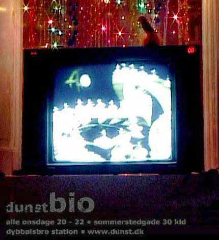
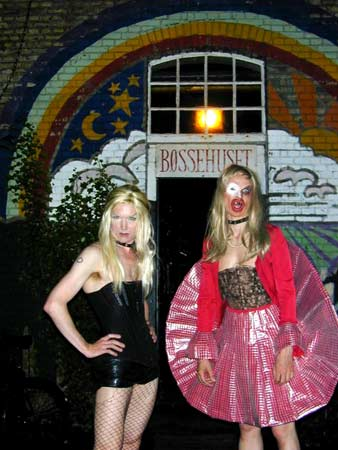
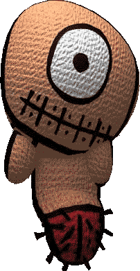

| dunst HISTORIE |
| dunst er Et sosialt netværk med initiativer. En forening, et sexualpolitisk, aktivistisk, kunstnerisk forum for alle hermafoditter, transseksuelle, transvestitter, lesbiske, bøsser, biseksuelle og freaks der har noget på hjertet og stræber mod at opretholde en unik, kraftfuld, farverig, larmende og spændende queer-undergrund i Danmark. Martin Kjær har beskrevet hvordan man dunster i dunst i artiklen "Nej se nu kommer der trash-drags!". Derudover er dunst:
Hvordan startede dunst? I 2001 sad Ulle Dulle, Mixen, Miss Fish og Ramona Macho i en lejlighed på vesterbro og var trætte af de manglende alternativer på den Københavnske queer-scene. Trætte af at hele miljøet er bygget op omkring sex, dyr fadøl, melodi grand prix og ensretning. De indså at de selv måtte gøre noget for at tilføje det de syntes manglede. Nemlig et sted for venner. En sexualpolitisk forening for minoriteter i queer-miljøet og for homo/bi/hetero-transer, hermafoditter, etniske, ensomme, punks, biseksuelle osv. Alle dem der ikke lige følte sig så godt tilpas i det etablerede miljø. De fandt på en masse forenings-navne som de læste op for hinanden. "TransMission", "half Man - half Babe", "Mongrel", "Hysteria"... -"Det er alt for højtideligt" svarede Ramona Macho. -"hvorfor kalder vi det ikke bare for dunst". Og så blev foreningen grundlagt. |
|  |
| I starten blev dunstmøderne holdt i 'Settlementet', en kristen
varmestue på Vesterbro. Lokalet kostede 100,- per gang. Der var mange
planer og mange diskutioner. Bjarnepigen
lavede mad og nogle lagde en ti'er. Efter nogle måneder arrangerede
vi vores første dunstfest Barbeque
9 juni 2001 i beboerhuset på Halmtorvet. Vi fejrede dunst. Senere blev der rejst økonomisk støtte til at leje et par kælderlokaler i Sommerstedsgade. Her blev der indrettet gratis internet-café med webcam, fælleskøkken. Og nu var det muligt at lave andet en bare at holde møder og Miss Fish & Anderz lavede dunstBio som var en ugentlig filmaften, Ramona Macho lavede sprællemands workshop. |
 |
| Der blev kopieret en bunke nøgler så alle kunne komme og
gå som de ville, og pludselig havde alle fået internet. Men så var pengene pludselig sluppet op, og vi arrangerede en stor fest 'Gay Night Cabaret' 8 Juni 2002 i Hal-D. For at lokke folk til, havde vi navne på plakaten som DJ Alexis og dragqueen O.T.B., samtidig med at dunst selv havde nogle performere. Overskudet fra festen finansierede os et par måneder frem i tiden, men igen blev kassen tom. Den eneste måde at holde foreningen i live var ved at holde fester heletiden for at kunne betale vore regninger. dunst-fester dunst-fester har siden budt på liveshows med selvkomponeret musik, nogle af byens bedste undergrunds-dj's, i vores eget fest-koncept, som regel med en eller anden form for tema. dunst handler om at flippe ud, og roller spilles for sjov, ikke fordi man ikke tør være sig selv. Tag ikke til en dunst-fest hvis du bare vil læne dig tilbage og lade dig underholde. Vi opfordrer alle gæster til at deltage, være med til at køre stemningen op til et klimax af løssluppenhed, skønhed, flirt, dans, sex, spontanitet og show. |
 |
| dunst i Bøssehuset I foråret 2003 blev dunst tilbudt at flytte til Bøssehuset på Christiania. Bøssehuset, der oprindeligt er et bøsseteater, havde stået mere eller mindre "tomt" i et par år, og blev nu kun af og til brugt som øvelokaler for div. bøssekor, squaredance-grupper, og så hvert andet år som backstage til 'Frøken Verden' i den Grå Hal. Efter et par diskussioner Bøssehuset og dunst imellem, takkede vi ja til også at blive en aktiv del af Bøssehuset, pakkede kælderlokalerne sammen og tog en flyttebil til fristaden. Den skulle dog vise sig ikke at være så fri endda. Vi meldte vores ankomst med den berygtede 'Helligånds fest', 8 juni 2003 i pinsen. Dagen efter var der adskillige både skriflige og mundtlige klager, en lokal Christianit truede endda med at smadre vores homo-hoveder med et baseballbat, hvis vi nogensinde holdt fest igen. Trods den skæve start havde vi dog en skøn sommer. dunst-bio fortsatte i bøssehuset, og kørte en gang om ugen, ialt i halvandet år. Vi grillede i haven, Vi lavede 3 'Bevar Christiania'-støttearrangementer. Stimulundia arrangerede kunst i dunst udstillingen. Ulle dulle lavede 3 onsdags lounges, aktivist-møder, som i Bøssehustet ånd blev lavet om fra tirsdagsmøder til mandagsmøder. På grund af en del uoverensstemmelser dunst og Bøssehuset imellem, blev vi i efteråret smidt på porten, (bogstaveligt talt) og var i et stykke tid bare en hjemmeside. Vi skrev et åbent brev til Christiania som blev trykt i Christiania avisen "Ugespeglet". Idag holder vi tirsdagsmøder i Galebevægelsens lokaler på Frederiksberg. flere dunst's aktiviteter dunst aktivister har lavet nogle demonstrationer. Serbisk Ambasade, Polske Ambasade. Performancegruppen har optrådt flere steder i Danmark og i udlandet. Bla.a. Sverige, Tyskland, Holland, Frankrig, Sweitz og Spanien. |
 |
| TV/Film-gruppen opstod i 2003, da vi fik en aftale i hus med Kanal
København. Gruppen bestod af: Ramona Macho, Knud Vesterskov, mAdam, Dennis Agerblad, Puta, Stimulundia, Hairwerk & The Thom. Andre dunstere medvirkede. Og vi fik hjælp af de forskellige kontakter udefra. Vi kalte os for kanal dunst og producerede i alt 6 udsendelser, hver på 27min. Hvert program blev vist 5 gange om måneden. Men det sjette program blev aldrig vist da Kanal København nægtede at sende et af indslagene hvor Ramona Macho spiser en lort. Derudover har vi lavet flere filmevents. dunst CD udgivelse Pladeselskabet Useless Salvation kontaktede 9 dunstere med ønske om at udgive nogle af kunstnernes sange og musik. CD'en odéur udkom. Men distrubutørerne kunne ikke lide de homoseksuelle tekster. F.eks. synger Dennis Agerblad -"I'm an asshole sniffer" Vi lægger vægt på at være aktivister, dvs. at alle giver en hånd med til arrangementer, kommer til møderne og hjælper hinanden på tværs af grupperne. Alt aktivistarbejde er ulønnet, og alle dunst's indtægter går til foreningens drift. Hvad taler vi om på møderne? På dunst-møderne diskuterer vi fremtidige arrangementer. Alle er velkomne til at foreslå punkter på dagsordenen. Tirsdagsmødet er også stedet hvor nye medlemmer kan komme og præsentere sig selv, og nye medlemmer kommer altid på som punkt nummer et. Bliv medlem! Det koster 50 kr om året i medlemsgebyr. Alle er velkomne til at være med i dunst. Hvis du kunne tænke dig at blive dunst-aktivist kan du skrive en mail til info(a)dunst.dk Intro til nye medlemmer er den første tirsdag hver måned. |
|
Print denne side |